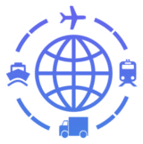
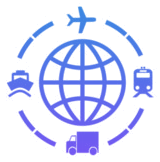

🎨 أيقونة مخزون دائم ومتنوع بلون Timber Import
⚠️ معاينة فقط — الموقع لم يُلمس
المرجع: Timber Import.png
تدرج عمودي: أزرق #378AE0 (أعلى) ← بنفسجي #7653F3 (أسفل)
/Timber Import.png)
تدرج أزرق ← بنفسجي
مقارنة الأيقونات على مخزون دائم ومتنوع
أزرق الموقع #1e40af

نيلي ← أزرقفي الموقع

أزرق ← بنفسجيفي الموقع
📌 ثلاث نسخ لأيقونة المخزون: أزرق الموقع | تدرج warehouse (نيلي←أزرق) | تدرج Timber Import (أزرق←بنفسجي)
أي نسخة تعتمدها؟ «الأولى» / «الثانية» / «الثالثة»؟
أي نسخة تعتمدها؟ «الأولى» / «الثانية» / «الثالثة»؟